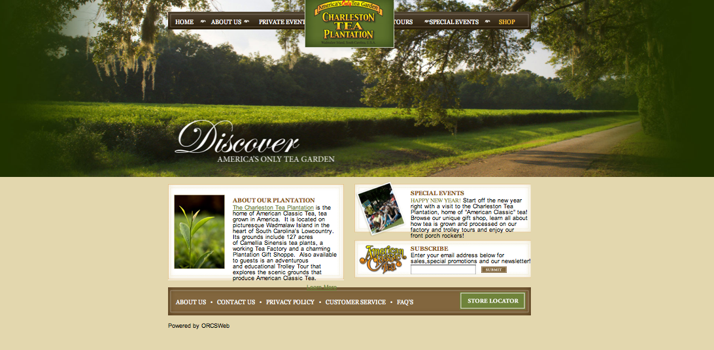

http://www.tendergreensfood.com/
Last looked at 1/19/12
Brand- simple, fresh, rustic, appetizingThe Tender Greens website is very simple- the site's main page has minimal features yet manages to appeal to the eyes and the stomach! Its wooden background gives it a rustic feel, emphasizing its wholesome and healthy menu.
Functionality- Tender Greens image is all about its food quality. The most important things to look for would be menu and locations, both which can be easily found on the sidebar. One thing they could add is an ingredient list for sauces and dressing for vegan/vegetarian consumers.
Interactivity- There is a contact us tab and a blog where users can upload and share their food/health/nutrition experiences. Since Tender Greens audience largely appeals to health-conscious consumers, they provide a nifty tab that calculates calories based on the ingredients you check.
Navigation - The ever-present sidebar makes this site easy to navigate. Clicking the logo will take you back to the home page. However, the site only has a search bar in the blog section so users need to know where to look to find what they're looking for. Overall, very basic yet has the essentials and easy to use.
http://www.wholefoodsmarket.com/
Last looked at 1/19/12
Brand- colorful, healthy, exciting yet elegantThe whole foods market site only features natural colors emphasizing its high quality natural and organic products. The site is crowded with hyperlinks, images, and menus but somehow maintains an upscale quality.
Functionality- Everything you could possibly want to know about whole foods, their products, recipes, the importance of organic foods, etc can be found here. However, I failed to find their weekly specials. In my opinion, the site is too cluttered, negatively affecting a user's search.
Interactivity- The Whole Foods Market site definitely has a lot going on. Everything on the main page can be clicked and the user would be led to much more information. Users can set their locations and make a login to help customize their experience.
Navigation- The fact that there is a side bar helps but the Whole Foods Market site is difficult to navigate due to the massive amounts of stuff on every inch of the site. With some time and under careful examination, a user should be able to get what they need from the site.
http://www.bottegalouie.com/
Last looked at 1/19/12
Brand- elegant, tasteful, straightforward, restrainedBottega Louie's site is extremely minimalist- the front page has the logo and the city of its location, Los Angeles. Upon clicking, there are 4 options, all this information is constrained to the center of the web page.
Functionality- Despite the massive amounts of whitespace on Bottega Louie's site, all basic information is present. The single image of the logo is powerful although small. The gold and black color scheme makes a polished, dignified site.
Interactivity- The site has a link to the restaurant's blog, which is their facebook page (a place with high interactivity).
Navigation- As is usually the case with minimal websites, the Bottega Louie site is very easy to navigate. Mostly due to the fact there is not much information to navigate through! This particular is more simple because the menu tabs open up on the white space, unless you are looking at the blog and the menus.
http://www.mimiscafe.com/
Last looked at 1/19/12
Brand- relaxed, quaint, simpleThe Mimi's cafe site is a simple page with a quaint feel boring colors but with savory images. There is nothing too fancy but their site as well as the image they are going for is cozy.
Functionality- The different thing about Mimi's cafe website is it's double fixed horizontal bar. It contains what the majority of people go on restaurant websites for: the menu for breakfast, lunch, dinner, locations and more.
Interactivity- Mimi's cafe has the option of ordering meals online and joining the eClub where members can get exclusive discounts and offers. It also encourages users to like them on facebook and follow them on twitter.
Navigation- Mimi's cafe isn't the world's coolest website but it is easy to navigate and has all the information readily available on its home page.
http://www.tabasco.com/main.cfm
Last looked at 1/19/12
Brand- funky, unique to company, excitingTabasco's site is in funky shades of red and green, their brand colors. The graphics are artsy and original. For a product that has been in the market for so long, they did a great job redo-ing the site!
Functionality- Tabasco's site has two side bars, one with a funny-looking cook and one standard one on the bottom of the page. There isn't much important content on the site, mostly graphics and brand history.
Interactivity- Just because there aren't important content doesn't mean Tabasco doesn't have a lot of content. There is a lot of interactivity going on. Whether it is joining Tabasco nation or looking through the venues, Tabasco has a very exciting web page!
Navigation- The Tabasco site does a very good job of having a busy website but providing means for the user to know exactly where they are and their search bar did a good job of bringing back what I was searching for.
http://www.wonderbread.com/
Last looked at 1/19/12
Brand-fun, retro, unique to companyWonderbread's classic image is beautifully displayed on their website. Their main page is playful and exciting. The floating menu options are a little distracting but unique.
Functionality- The Wonderbread site contains a wealth of knowledge. Everything you have wanted to know about Wonderbread including its history, different flavors, nutrition and recipes.
Interactivity- Lots of movement on the home page but everything else is mostly text and a beautiful image of bread! There is however, the option of connecting your twitter, facebook, and email for extra updates.
Navigation- The Wonderbread site is a breeze to navigate through. It provides multiple side bars so that you can easily find your way through the site. The color scheme and simple layout work really well and an eye-pleaser.
http://foodgawker.com/
Last looked at 1/19/12
Brand- beautiful, simple, sophisticated, mouthwatering goodnessFood gawker is not a restaurant or business but is a site where users can upload pictures of beautiful food and a hyperlink to the recipe of the pictured item. The site has a grid layout of pictures. It is very clean and simple and very easy to use.
Functionality- The foodgawker.com's main function is to share pictures of yummy food. They do an excellent job of doing that and make it easy to just browse, comment, or upload your own photos.
Interactivity- This website is runs on uploads so it is very interactive. Users can rank their favorite pictures and save the recipes.
Navigation- The website is very simple to navigate. Everything is intuitive and the things you can do on the site are limited. This makes more room and puts the focus on the pictures and recipes of the shared food images.
http://www.panerabread.com/
Last looked at 1/19/12
Brand- Simple yet elegant, nutritious, greenEarthy colors are all over panera's website. A signature sandwich is prominently displayed in the main image screen and their small boxes provide a quick link to their most popular menu options.
Functionality- Panera bread has a complete menu and nutrition tab. However, it is a pain to try to see what menu items look like because there are links upon links and makes the user irritated when they finally get to it. Too much information ruins the experience for panera.
Interactivity- Panera bread's website has a lot of menu options so a lot of interactivity. The site encourages exploration of the site and a lot of effort has been put into the site to showcase their bakery and restaurant options.
Navigation- Panera bread's web page is hard to navigate due to the cluttered and massive amounts of information. Although they have side bars, they are not fixed so it is hard to know how to get back to the homepage.
http://www.innout.com/
Last looked at 1/19/12
Brand- fun, retro, unique to companyAfter a wonderful clip of an animated in and out drive-thru complete with award-winning music, users are directed to in and out's site, which is completely unique. Like its hassle-free menu, the website is also simple.
Functionality- The In-n-out site provides info on their menu, history, food quality, locations and more. Apparently many people are concerned about location because there are multiple places on the site where you can calculate the nearest location etc.
Interactivity- There isn't too much interactivity here, but in-n-out keeps everything simple. You can download a In-n-out iPhone locator app!
Navigation- An animated drive-thru menu sign serves as the sign for the website as well. Not only is it adorable, but it is always there to guide users throughout the site for easy navigation.

http://www.charlestonteaplantation.com/
Last looked at 1/19/12
Brand- sophisticated, simple, lushThe Charleston tea plantation site opens up with a picture of the plantation, a very green, lush open field of tea leaves. The site makes the tea plantation seem like a grand and impressive plantation.
Functionality- The site provides ample information about their tea plantation. The different kinds of tea they grow and services they provide are just examples of the kinds of information their website provides.
Interactivity- The Charleston tea plantation website is very interactive and has very many links to provide users with useful info. The sidebars are well-organized and they have a nice contact us page.
Navigation- The Charleston tea plantation website is overwhelming at first because of all the information but it is a well-made site that easily directs you to where you want to go.
My Website Sketch